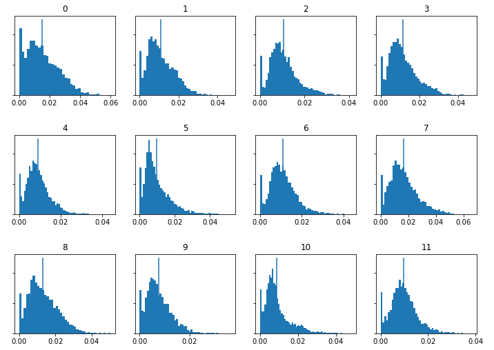

Extracting Meaning from Audio
Mel-Frequency Cepstrum Coefficients, Chromagrams and Spectrograms
Below are the MFCCs, chromagrams and spectrograms generated by Sonic Visualiser for each of the tracks.
 |
||
| Air from BWV 1068, Bach | Lieutenant Kijé Suite - Romance, Prokofiev | Russians, Sting |
See zoomed in versions for Romance and Russians.
{kind=link}
{kind=link}
Visualising Features with Histograms
Below are the chromagrams for each track etc.
|  | ||
| Air from BWV 1068, Bach | Lieutenant Kijé Suite - Romance, Prokofiev | Russians, Sting |
Below are the MFCCs for each track etc.
| Air from BWV 1068, Bach | Lieutenant Kijé Suite - Romance, Prokofiev | Russians, Sting |
The histograms above capture some differences and similaritites between the three tracks. Comparing Air and Romance, the histograms are generally similar, with perhaps Romance having narrower peaks. This was expected since both pieces are orchestral works and therefore have similar timbres. The slight differences may be due to the heavier brass and plucked sounds in Romance.
Comparing the Air and Russians, we see that feature 0 has a much narrower peak for the Sting song and that feature 1 has a longer tail to the right, with a small peak on the left. Feature 9 appears wider in the Air. The same discrepancies appear in the first row between Romance and Russians. These differences were expected: the Sting song features different instrumentation, like drums, vocals, and sound effects (radio broadcast recordings), unlike the two orchestral pieces. Finally, the differences in histograms would be more significant if isolated instruments were compared.
Note that the spectrograms have been omitted here because they were already visualised in the first section.